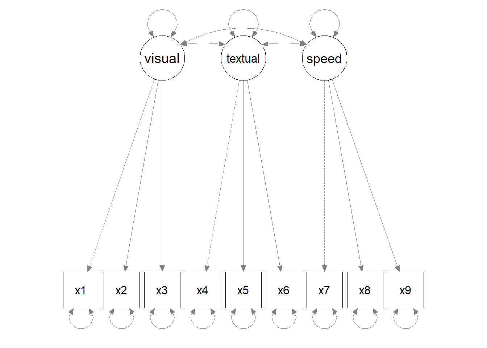
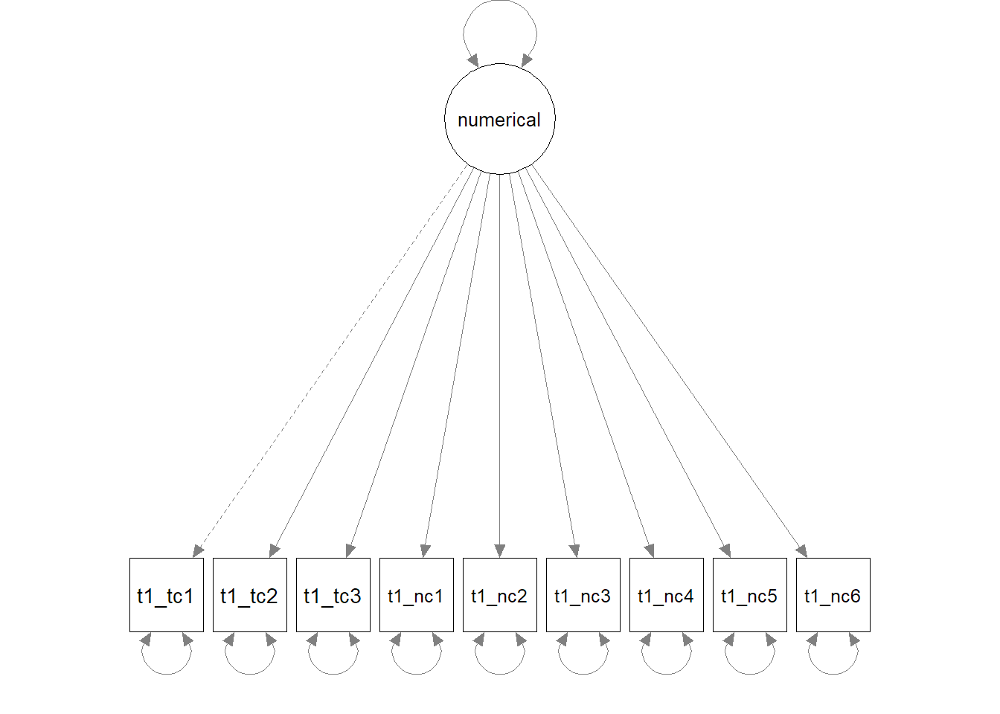
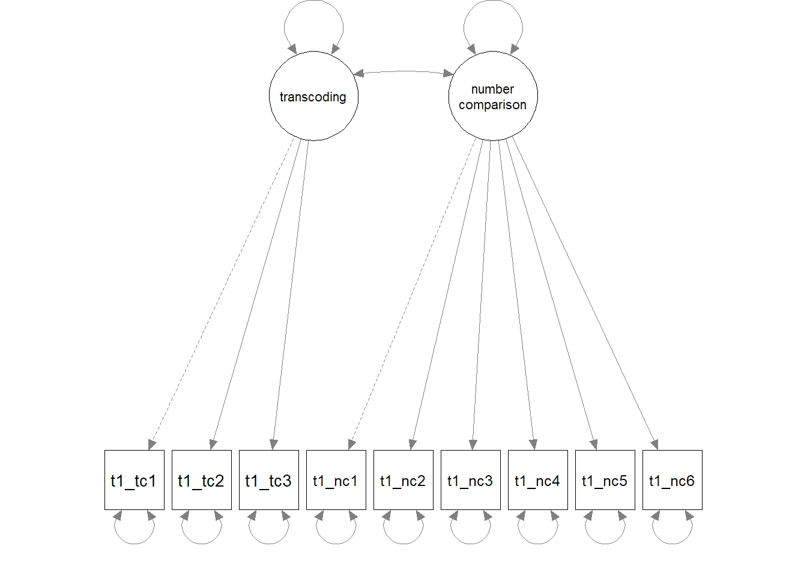
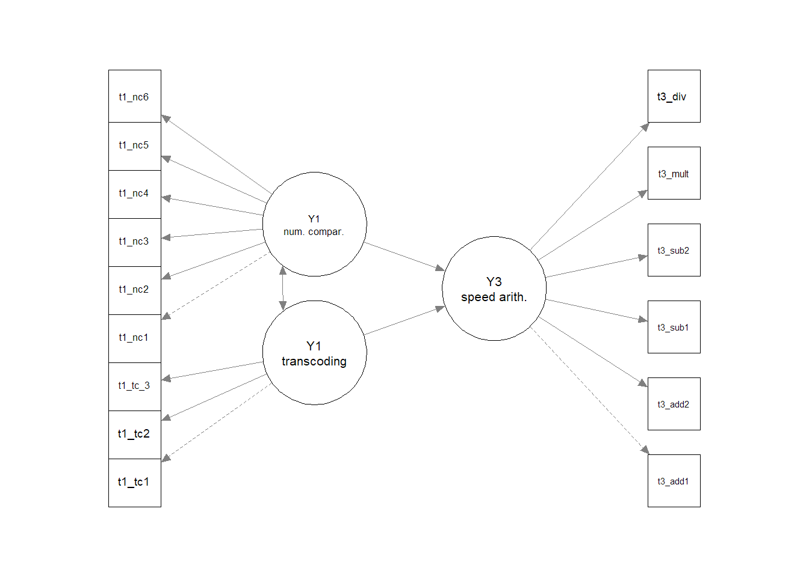

library(tidyverse)
library(lavaan)
library(semPlot)Practical materials for Advanced Methods in Behavioural Research, Semester 2 (2025-2026), University of York.
1 Introduction
Learning objectives
As a reminder, the learning objectives for this week are:
- Differentiate between univariate and multivariate analytical approaches
- Describe the measurement and structural components of structural equation modelling
- Outline the five key stages involved in conducting structural equation modelling
- Discuss factors that affect the implementation and generalisability of a structural equation model
- Fit a basic structural equation model using lavaan
In this practical, we will use tools from the lavaan package to fit structural equation models. In Part A, we will fit a measurement model to a classic dataset often used to demonstrate SEM methods, the Holzinger & Swineford data on cognitive abilities. We will then apply this knowledge to measures of early numerical ability in Part B, and extend to a structural model that predicts later mathematics outcomes in children.
2 Setting up
2.1 Packages
Today’s practical will use the following packages. You will need to install each one, before loading them at the top of your script.
3 Part A: Core example
3.1 Introduction to the dataset
The Holzinger and Swineford (1939) study measured the mental abilities of 7th and 8th grade children. The dataset has been widely used in developing and exploring factor analysis methods, and is loaded automatically as part of the lavaan package. Load it into your environment using the following code, and rename it hs_dat for usability during the practical.
# Load data
data(HolzingerSwineford1939)
# Rename
hs_dat <- HolzingerSwineford1939Type ?HolzingerSwineford1939 in your console to open the dataset description in the Help panel. Use R code to answer the following questions about the dataset:
- How many pupils are included in the dataset?
- How many schools did they come from, and what was the distribution of pupils between the two?
- What was the age range of the participants?
Click for a hint!
You will need to find a way to combine information across the year and month columns. You could do this by either sorting the dataframe by each column in turn, or by creating a new age variable that takes both pieces of information into account.
Show example code
# Number of pupils
length(unique(hs_dat$id)) # base R
hs_dat %>% distinct(id) %>% count() # tidyverse example
# Schools
hs_dat %>%
group_by(school) %>%
count()
# Age range - by sorting
hs_dat %>%
arrange(ageyr, agemo) %>%
slice(c(1, n()))
# Age range - by new variable
hs_dat %>%
mutate(age = ageyr + (agemo/12)) %>%
summarise(min = min(age), max = max(age))As we discussed in the lecture, SEM is a multivariate technique, meaning that we want to understand the relationship between multiple variables. Use the cor() command to inspect the relationship between the key measures (x1-x9). We can round the output to two decimal places for readability.
# Inspect correlation between measures
hs_dat %>%
select(x1:x9) %>%
cor() %>%
round(digits = 2)3.2 Measurement model
3.2.1 Model specification
The first step in SEM is to specify the model formula: what are the hypothesised constructs? A three-factor model is often proposed for this dataset, which we can specify as follows:
# Specify model formula
hs_spec <- "visual =~ x1 + x2 + x3
textual =~ x4 + x5+ x6
speed =~ x7 + x8 + x9"
Tip!
Note that the usual Ctrl+Enter keyboard shortcut does not work so well for these model formulas. You will either need to (1) repeat the shortcut as it progresses through each line of code; (2) highlight the whole chunk before using the keyboard shortcut; or (3) highlight the whole chunk and click run.
On the first line of this formula, we have created a new latent variable and given it a name, visual. We have specified that it is measured by (=~) variables x1-3, which we have listed by name (separated by the + operator). On the subsequent lines, we’ve specified two more latent variables in the same way, textual and speed. The whole model formula is stored as an R object (as a character string), which we’ve called hs_spec, ready for use in model fitting.
The model we are fitting therefore looks like this:

You can remind yourself how the different measured variables (x1-9) reflect the latent constructs by looking at the tasks they correspond to in the dataset help file.
3.2.2 Model identification
We won’t worry too much about model identification here - we would get an error message if this was a problem! But just so that you have a worked example and you can interpret the model information below, we can see that the model is (over-)identified as follows:
- Number of data points: N = (p*(p+1))/2), where p is the number of measured variables. We have 9 measured variables, so this can be expanded as follows:
- N = (9*(9+1))/2 = 45
- Number of parameters: The dashed lines in the diagram above show that the first loading of each latent variable is fixed to 1 by default (the marker method described in the lecture). We can count the remaining free parameters to be estimated, including the remaining factor loadings (6), variance of latent variables (3), covariances between latent variables (3), and error variance for each measured variable (9) = 21 free parameters to be estimated.
- Degrees of freedom: Number of data points (45) - Number of parameters (21) = 24
- The model is overidentified (= good).
3.2.3 Model estimation and evaluation
Now that we’ve specified our model and checked its suitability, the next step is model estimation. Let’s fit it to the data!
# Fit model
hs_fit <- cfa(hs_spec, data = hs_dat)
# Print output, including fit indices
summary(hs_fit, fit.measures = TRUE)We use the cfa() function here as we are only testing the relationship between the latent variable(s) and measured variables.
The first section of the model output tells us about the model fitting process, including the number of iterations needed to fit the model alongside the estimator and optimization method used. You can also see the number of observations included (this should match your number of participants / rows in the dataset) alongside the number of model parameters and degrees of freedom as we counted up above.
We can then see a number of fit indices printed, including CFI, TLI, RMSEA, and SRMR as we discussed in the lecture. Based on your notes, do you think this model is a good fit?
3.2.4 Model modification
Let’s see if there are any sensible changes that improve the fit of the model. We can ask lavaan to show us the change in chi-square statistic when different possible parameters are added. We specify sort = TRUE so that it shows us the biggest improvements at the top of the list:
# Modification indices
modindices(hs_fit, sort = TRUE)The output tells us that the largest change (mi) would come from allowing x9 to also load on the visual factor. We can see from the help files that x9 corresponds to “Speeded discrimination straight and curved capitals”. It seems logical that performance on this task may also depend on visual perception abilities.
We can fit a new model to include this cross-loading (i.e., a measure that loads across two constructs), and inspect whether model fit is now satisfactory. Given this model adds one more parameter than the previous one—and doesn’t take anything else away—we can consider these two models as nested, and compare them statistically using the anova() function.
# Specify model formula
hs_spec2 <- "visual =~ x1 + x2 + x3 + x9
textual =~ x4 + x5+ x6
speed =~ x7 + x8 + x9"
# Fit model
hs_fit2 <- cfa(hs_spec2, data = hs_dat)
# Print output, including fit indices
summary(hs_fit2, fit.measures = TRUE)
# Test whether the cross loading has improved model fit
anova(hs_fit, hs_fit2)What do you think about the new model fit?
3.2.5 Model interpretation
When we’ve arrived at the final model, we can look more closely at the parameter estimates for the model, featured at the bottom section of the summary() output. It can be easier to interpret these on a plot, which we can create using the semPlot package:
semPaths(hs_fit2, whatLabels = "std")We’ve specified that the parameter estimates are presented in standardised format ("std") so that we can compare the estimates across different variables. You can change the whatLabels argument to "par" if you want them to be in the original units of the variables (as presented in the CFA output by default - we can similarly ask the summary output to present standardised units if we prefer).
See if you can answer the following questions about the model:
- Which two latent factors are most strongly correlated with each other? Which two the weakest?
- Which variable loads most strongly onto the visual factor? Which one most weakly?
Take a break!
If you haven’t already taken a break today, we suggest you do so before you start the next section.

4 Part B: Apply your knowledge
4.1 Introduction to the dataset
Structural equation modelling is a particularly valuable tool for longitudinal questions, allowing researchers to ask how traits or abilities measured at one time point predict later outcomes. For Part B, we will analyse data collected in the Numerical Cognition Lab led by Professor Silke Goebel here at York. The project looked at whether children’s numeric and cognitive skills measured in Year 1 predicted mathematical performance in Year 3—you can find the early view of their paper here if you’re interested.
The team have shared their data openly on the Open Science Framework, so we can import this directly as usual. This is a large dataset with several variables that are harder to keep track of without reading the paper and understanding the whole project. To make this easier, I’ve selected and renamed the relevant variables in the code below. Copy it into your script to load and format the data for today.
maths_dat <- read_csv("https://osf.io/z5tr9/?action=download") %>%
# Select relevant variables
select(id, t1agemm,
# Number transcoding
t1nw, t1nid, t1nr,
# Number comparison
t1mce1tc, t1mce4tc,
t1mce5tc, t1mce3tc,
t1mce7tc, t1mce6tc,
# Y3 Mathematical reasoning
t3mr,
# Y3 Speeded arithmetic
t3ad, t3ade, t3sb, t3sbe, t3ml, t3dv) %>%
rename(t1_age_m = t1agemm,
t1_tc1 = t1nw, # write
t1_tc2 = t1nid, # identification
t1_tc3 = t1nr, # read
t1_nc1 = t1mce1tc, # sym_far
t1_nc2 = t1mce4tc, # sym_close
t1_nc3 = t1mce5tc, # dot far
t1_nc4 = t1mce3tc, # dot close
t1_nc5 = t1mce7tc, # dot 3:4
t1_nc6 = t1mce6tc, # dot 5:6
t3_mr = t3mr,
t3_add1 = t3ad,
t3_add2 = t3ade,
t3_sub1 = t3sb,
t3_sub2 = t3sbe,
t3_mult = t3ml,
t3_div = t3dv)Despite being a subset of the dataset, you’ll notice that this is still a lot of variables to be working with compared to previous weeks! Variables labelled with t1 correspond to measures administered when the children were in Year 1; variables labelled with t3 correspond to measures administered when the children were in Year 3. The key variables we will be working with are as follows:
- id: a unique identifier for each participant
- t1_age_m: age in months at T1
- t1_tc*: variables corresponding to the transcoding of numbers at T1, including writing, identification, and reading
- t1_nc*: variables corresponding to number comparison tasks at T1, including symbolic (numbers) and non-symbolic (dot) comparisons, with comparisons that were closer and further apart.
- t3_mr: mathematical reasoning ability at T3
- The final six columns reflect additional speeded arithmetic measures at T3. These are only relevant for the “Challenge yourself” task at the end.
Answer the following questions about the dataset:
- How many participants are there in the dataset?
- What is the range of participant ages at T1, in years?
- How many of those participants completed the mathematical reasoning task at T3 (
t3_mr)?
Show example code
# Number of participants - some examples
nrow(maths_dat)
length(unique(maths_dat$id))
# Range of participant ages
min(maths_dat$t1_age_m)/12
max(maths_dat$t1_age_m)/12
# Data at T3
maths_dat %>%
filter(!is.na(t3_mr)) %>%
count()4.2 Measurement model
Use the code you learned in Part A to carry out the following analytical steps:
Use the
cor()function to inspect the relationships between the nine different t1 mathematical tasks —ie. those that begin with t1_tc and those that begin with t1_nc. Do the transcoding tasks (t1_tc*) tasks correlate more highly with each other than with the number comparison (t1_nc*) tasks?Use confirmatory factor analysis to decide whether these early mathematical measures best reflect a single “numerical skill” ability or two different abilities.
- Specify and fit a one-factor model, where all nine variables load onto a single latent variable named “numerical”. Inspect the fit of this model.
- Specify and fit a two-factor model, where the three transcoding variables (t1_tc*) load onto a “transcoding” factor, and the six number comparison variables (t1_nc*) load onto a “num_comparison” factor. Inspect the fit of this model.
- Decide which model is a better fit to the data.
- Do you think we need to consider any further model modifications?
Your two models should look as follows:


Show the code
# Correlations
maths_dat %>%
select(t1_tc1:t1_nc6) %>%
cor() %>%
round(2)
# One factor model
numerical_1f <- "numerical =~ t1_tc1 + t1_tc2 + t1_tc3 +
t1_nc1 + t1_nc2 + t1_nc3 +
t1_nc4 + t1_nc5 + t1_nc6"
fit_1f <- cfa(numerical_1f, data = maths_dat)
# Two-factor model
numerical_2f <- "transcoding =~ t1_tc1 + t1_tc2 + t1_tc3
num_comparison =~ t1_nc1 + t1_nc2 + t1_nc3 +
t1_nc4 + t1_nc5 + t1_nc6"
fit_2f <- cfa(numerical_2f, data = maths_dat)
# Inspect fit of each
summary(fit_1f, fit.measures = TRUE) # inadequate
summary(fit_2f, fit.measures = TRUE) # good fit - nothing further needed4.3 Structural model
Now we have successfully modelled the latent constructs relating to early numeric skills, we can see whether they relate to long-term mathematical performance. The researchers followed up the same children two years later to see how Year 1 abilities predicted mathematical reasoning in Year 3.
In our new model formula, we should specify how our latent constructs are measured just as we did before. However, we can now add a structural part to test whether mathematical reasoning (t3_mr) is predicted by (~) our two latent variables. This part of the model formula should feel familiar—you have written similar regression formulas in earlier practicals.
Specify the model, and use the sem() function this time to fit it.
# Longitudinal model specification
pred_mr <- " # measurement model
transcoding =~ t1_tc1 + t1_tc2 + t1_tc3
num_comparison =~ t1_nc1 + t1_nc2 + t1_nc3 +
t1_nc4 + t1_nc5 + t1_nc6
# regressions
t3_mr ~ transcoding + num_comparison"
# Fit model
fit_predict <- sem(pred_mr, data = maths_dat)Complete the following remaining steps for your analysis:
- Evaluate the model: Is it a good fit to the data? Are any further modifications required/justified?
- Use
semPaths()to plot the path diagram. - Interpret the output: Which early numerical skills is a stronger predictor of later mathematical reasoning?
Show the code
# Inspect model - fit indices indicate good fit as is
summary(fit_predict, fit.measures = TRUE)
# Path diagram
semPaths(fit_predict, whatLabels = "std")
## ...transcoding skills a stronger predictor 4.4 Dealing with missing data
Take a look at your SEM model output. What do you notice about the number of observations used in the model, relative to when we fitted the measurement model using only Year 1 data?
In the lecture, we mentioned some possible ways of dealing with missing data, including using a different fitting algorithm called Full Information Maximum Likelihood. These techniques require several assumptions about the nature of missingness in the dataset, which we’ll be discussing in more detail in Week 10.
However, its implementation in lavaan is surprisingly simple: we just need to add an argument within the sem() function to specify that we want missingness to be addressed using (full information) maximum likelihood estimation. Try adding missing = "ML" to your SEM model above, and inspect the output. You should see that the number of observations included in the model increase.
Show the code
# Fit model
fit_predict_fiml <- sem(pred_mr, data = maths_dat, missing = "ML")
# Inspect output
summary(fit_predict_fiml, fit.measures = TRUE)5 Part C: Challenge yourself!
Mathematical reasoning is only one aspect of mathematical ability in developing learners. The researchers were also interested in speeded arithmetic skills, which they measured in Year 3 using 6 different tasks (labelled t3_add1, t3_add2, t3_sub1, t3_sub2, t3_mult, t3_div).
Fit a new model in which early numerical skills (transcoding, number comparison) predict subsequent performance in speeded arithmetic, captured by a third latent variable (as depicted below). You will need to specify how this latent variable is measured, and then use it in a regression path.

6 Summary
6.1 Recap
This week we have begun to see how multivariate approaches can be used to model large numbers of variables. You should now know that latent constructs can be inferred from several observed measures, estimating the common variance among related tasks and incorporating measurement error. We’ve seen how structural equation models can incorporate latent constructs alongside regression paths in a flexible manner, providing a powerful framework for statistical modelling. We’ve walked through the five key stages of model fitting, as implemented within the lavaan package, and considered issues relating to over-fitting along the way.
6.2 Further learning
This week’s core reading is on the VLE as usual, and there are plenty of Quantitude podcasts relating to SEM issues if you want to add some variety to your learning. If you want to gain more interactive experience, there’s a whole DataCamp course on Structural Equation Modelling with lavaan in R.
Feedback!
These practical sessions are new this year. Please take a moment to rate the difficulty and length of these practical activities via this survey, and let us know of any issues you encountered or aspects you didn’t understand (positive feedback is also welcome!). You will need to be logged in with your university account to respond, but your submission will be anonymous.
For more general questions about the practical, please post them on the VLE Discussion Board.